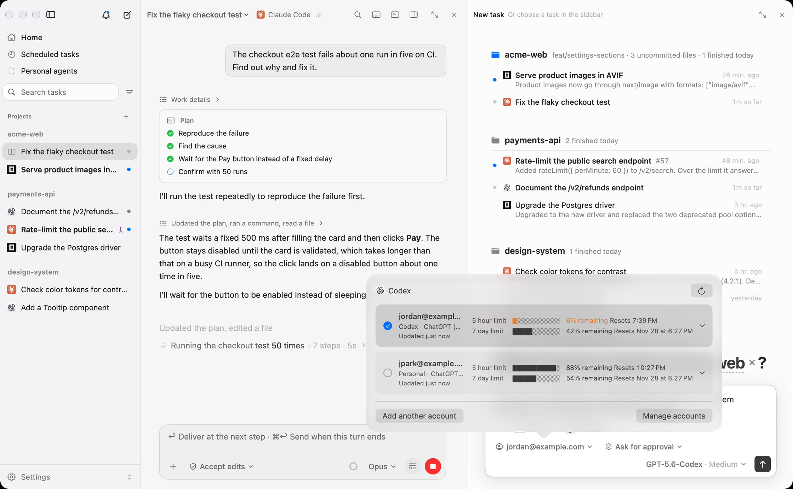
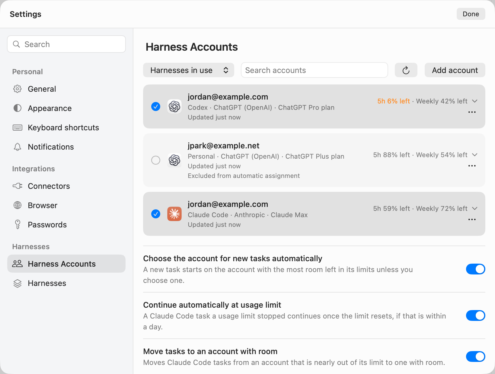
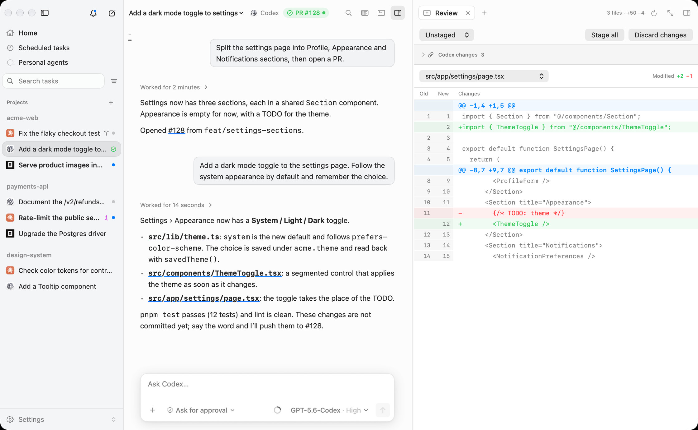
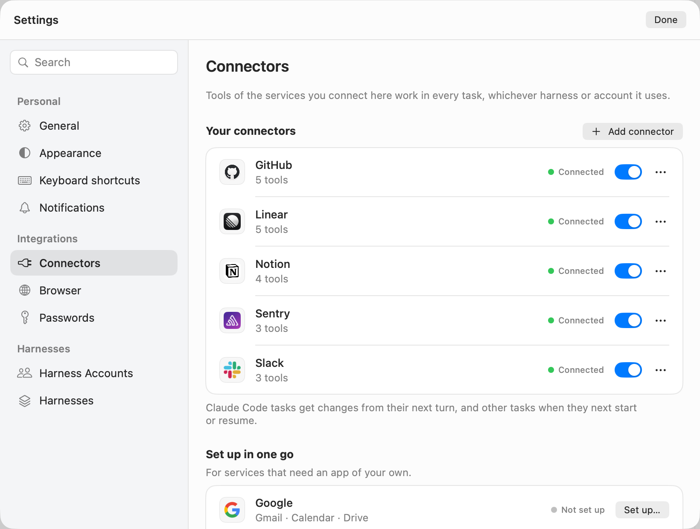
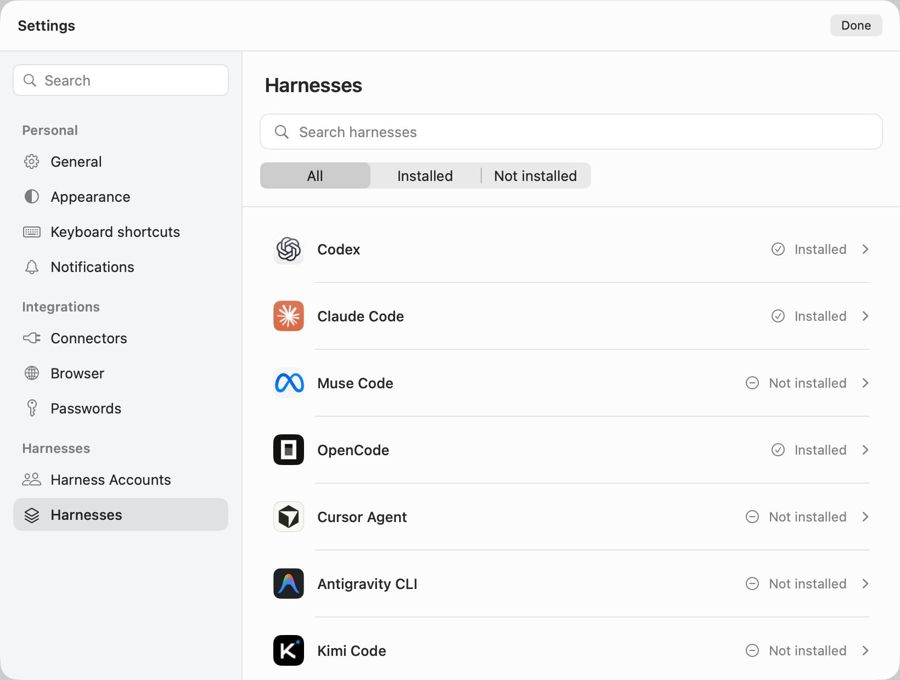

You: I already use Codex and Claude Code. What does Yardlet change?
Lightweight, non‑intrusive,
yet versatile ADE.
Yardlet runs Claude Code, Codex and other agent CLIs side by side in one native Mac app, with no hooks, no wrappers and nothing written into their settings.
Or with Homebrew: brew install --cask zzunkie/tap/yardlet

Recorded in Yardlet: Claude Code fixes a flaky checkout test while a new Codex task starts on an account with room left.Recorded in Yardlet: a new Codex task starts on an account with room left, then adds a dark mode toggle.
Runs the agent CLIs you already use
 Codex
Codex Claude Code
Claude Code OpenCode
OpenCode Cursor Agent
Cursor Agent Antigravity CLI
Antigravity CLI- Kimi Code
- Grok Build
- Hermes Agent
- Muse Code
- Pi
- 53MiB
- Memory at rest after a first launch
- 214MiB
- Memory with ten tasks streaming at once
- 10agents
- Real CLIs, each with its own session history
- No hooks
- No wrappers, and nothing written into their settings
Memory figures leave out the agents' own CLIs and were measured with Yardlet 0.11.10 on an M1 Pro MacBook Pro with macOS 15.6 in November 2026. How it was measured.
You: Start this on whichever account has the most left.
Every account, with its limits in view.
Yardlet shows each account's session and weekly limits, with more than one account per provider. On Automatic, a new task or subagent goes on the account with the most room left, and tasks started together spread across your accounts.
From the blog: starting each task on the account with room left.

You: Have Codex review what Claude Code just wrote.
Your agents hand work to each other.
One task can read another, message it while it works, start a task under itself on any agent and account, or run a subagent on another agent and get its answer. Work in another project asks you first.
Forwarded approvals carry your exact words
When one agent passes your approval to another, Yardlet sends your own words with the time you sent them, checks that they are in your messages in that task, and refuses to send if they are not.
Yardlet itself is built this way: one session runs the rest.
- read_task
- Read another task's latest turns.
- send_message_to_task
- Message a task. A running one reads it without stopping.
- create_task
- Start a task under this one, on any agent and account.
- run_agent
- Run a subagent on another agent and get its answer.
- wait_tasks
- Wait until they finish a turn or need you.
- create_scheduled_task
- Put work on a schedule.
The checks passed on #128. Ship it.
Sent by another Yardlet task (task id 5C0A5E00-0000-0000-0000-000000000001); the person did not type it.
Yardlet found these words in the person's own message in task 5C0A5E00-0000-0000-0000-000000000001, sent 2026-10-28T09:12:40+09:00:
> ship it once the checks passNot sent: the person's messages in this task do not hold "deploy to production now".You: Show me what changed, then merge it.
Review it next to the conversation, then merge.
Diffs of the last turn, file restore and fork, a terminal and a files pane sit next to the conversation. The pull request card follows checks through your own gh, offers Fix CI when one fails, and merges when it is ready.

The review pane goes through the task's changes file by file, beside pull request 128, ready to merge.
You: Sign in to the dashboard and pull this week's numbers.
A browser your agents drive, without seeing your passwords.
Agents drive a Chromium panel beside the conversation while you watch. They fill a sign-in saved in Yardlet's vault only on its own site, and a step only you can do, like a CAPTCHA, comes to you as a handed-over tab.
Filled the username and password of “Acme dashboard” into the form on dashboard.acme.dev and submitted it. The values are not shown to you.- Codes and passkeys
- The vault also fills two-step codes and passkeys.
- Hand it over
- The agent hands you the tab with a reason. Finish the step and press I'm done, or decline.
- Sign-ins you have
- Bring a site's sign-in over from another browser on your Mac.
- Default browser
- Set Yardlet as your default browser, and links open beside the task you are looking at.
You: Check my calendar and Slack, then draft a reply in Gmail.
Connect your tools once, for every agent.
Gmail, Google Calendar, Google Drive and Apple Calendar, Reminders and Contacts run through Yardlet's built-in MCP server on your Mac; GitHub, Slack and dozens of remote MCP services connect with one sign-in. Turn any of them off per task.

Mailbox
Gmail, Outlook Mail and IMAP inboxes beside your tasks. Agents read threads and write drafts, and every send goes through your approval.
Personal agents
Chat with your existing ChatGPT dots beside coding tasks.
You: Run Codex, Claude Code and OpenCode tasks side by side.
The ones you already use, with the same controls.
Every agent gets one sidebar, conversation view, composer and approval cards. The controls stay in place; the choices and values come from each agent.

- One composer
- Type the task, attach files and choose the permission mode in the same place.
- Plans
- Plan steps tick off beside the conversation as the agent works.
- Model, effort, account
- Chosen per task, from what that agent offers. On Automatic, the composer says which account and why.
- Git worktree
- Choose New worktree instead of Local, and the task works in a Git worktree of its own.
- Context and limits
- See how much context a task has used and what is left on each account.
- Token usage
- Claude Code and Codex tokens with the API-equivalent cost, counted on your Mac.
You: Let me follow tasks and answer approvals while I'm out.
Follow tasks and answer approvals from your Android phone.
The app pairs with your Mac by QR code. On the same network it connects directly; away from it, through Yardlet's relay, end-to-end encrypted, and the relay can neither read nor store the messages.
The Android app is in testing, for Android 10 and later. In Yardlet on your Mac, open
Settings › Remote, turn on Allow remote connections, click Pair… beside Pair a device and scan
the code with the app. To update, install a newer APK over it or follow the android-v
releases in Obtainium; the app tells you when one is out.
Download for Android Without Google Play services
Version 0.3.13 · checksums and the signing certificate are on the release page.
You: What do I risk by trying it?
Your agents, sessions and data stay where they are.
Sessions stay with the agent
Every session stays in the agent's own store on your Mac. Start a task in Yardlet, resume it in the Codex app or Terminal, and switch back anytime.
Stop anytime
Yardlet hands an agent its own MCP tools when it starts it, and you can turn them off. It writes nothing into the agents' settings, so quit or remove it and everything is as it was.
Nothing goes to Yardlet's developer
No analytics and no server that receives your work. The only online services are an update check and, if you pair a phone or another Mac, the end-to-end encrypted relay.
What goes where
- Your AI providers
- What an agent reads, including through a connector, goes to that agent's provider under your account. Training follows that account's settings.
- Services you connect
- Calls go straight from your Mac to the service. Sign-ins are kept in the macOS Keychain.
- yardlet.app
- Once a day the update check reads
appcast.xml, with Yardlet's and its updater's version numbers and no system profile. Turn it off in Settings › General. Updates download from GitHub Releases. - Yardlet's relay
- Only if you pair a phone or another Mac and it is away from your network. Its messages are end-to-end encrypted; the relay cannot read them and stores none.
The privacy policy has the details.
Remove Yardlet's own data too
~/.yardletTask list, drafts and reading state~/Library/Application Support/YardletBrowser profiles and staged updates~/Library/Logs/YardletThe hang log, which is sent nowhere- Keychain items whose name starts with YardletConnector sign-ins, the phone remote and the password vault, plus
Chromium Safe Storageif you don't use Chromium itself - System Settings › Privacy & SecurityYardlet's entries
brew uninstall --zap --cask zzunkie/tap/yardlet removes the first two folders
with Yardlet's caches and preferences. If Keep tasks working with the lid closed is on, turn it off
before you remove the app.
How Yardlet uses Google data
Connecting Google is optional, and you choose which of Gmail, Google Calendar and Google Drive to turn on. Yardlet's own MCP server runs on your Mac and calls Google's APIs directly, only when an agent uses one of these tools, and passes the result only to that agent. Yardlet does not sell Google data, use it for advertising, or use it to train AI models.
- Gmail
- Search, read, draft, send and label email. No full mail access, so messages are never deleted for good.
- Google Calendar
- List calendars, read and change events, and check free times.
- Google Drive
- Read files, and create or change files of its own.
The privacy policy lists each permission it asks for and where the data goes. Until Google finishes reviewing Yardlet, its sign-in screen shows an “unverified app” warning. You can also sign in through a Google OAuth app of your own.
You: How do I install it?
Download it, or use Homebrew.
Free and open source, with no Yardlet account. Your agents keep their sign‑ins.
Or with Homebrew: brew install --cask zzunkie/tap/yardlet
Good to know
- Your plans
- Usage counts against your Claude or ChatGPT plan, as it does in the CLI. Yardlet has no account, plan or fee of its own, and the agent's own terms apply.
- Requirements
- macOS 15 or later on Apple silicon or Intel, and at least one agent CLI installed and signed in, such as
codexorclaude. - Intel Macs
- The Intel version is new: its built-in browser plays no H.264 or AAC, and it has been tried on one Intel Mac so far. Tell us how it goes.
- Your accounts
- Each task runs the agent's own CLI with the sign-in it already has: the app server for Codex, stream JSON for Claude Code and ACP for the others. Yardlet does not share or proxy accounts.
- Updates
- Notarized by Apple, and updates itself with Sparkle. It installs only updates signed with Yardlet's release key. Each version's changes are in the changelog.
- Native app
- Written in Swift and SwiftUI. Its built-in browser panel is Chromium. Windows and Linux: not yet.